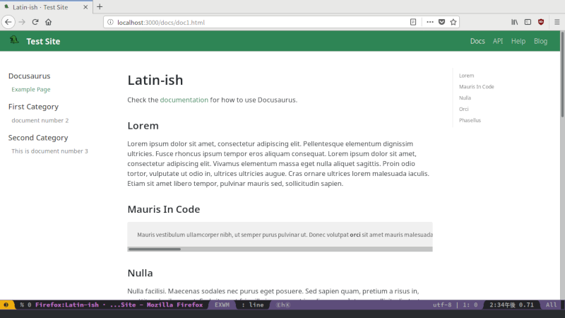
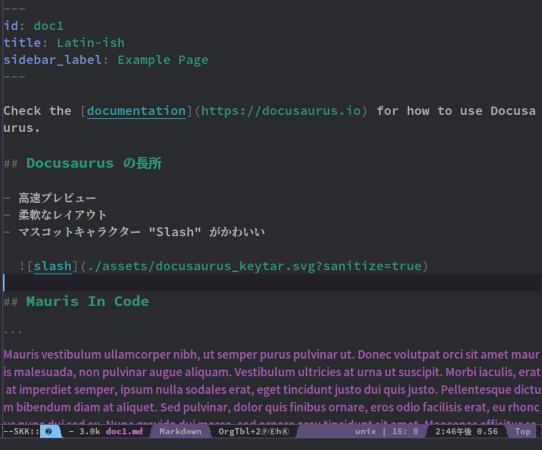
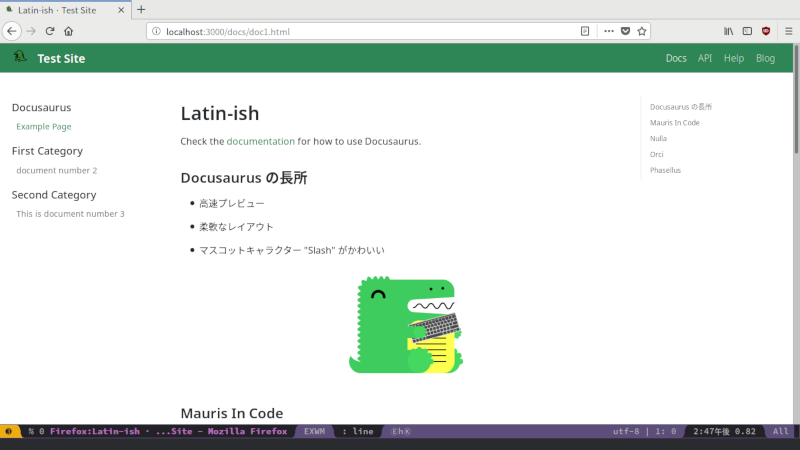

02 - インストールはできるけど
私は ThinkPad に向きあったまま考えている。隣には EeePC が鎮座し，困ったときの補助として待機している。
「手さぐりみたいになるけど，いい？」
「誰に許可を求めているんですか？」ThinkPad が問う。「構わん」早速 EeePC の助けが入った。これからこんな様子で進めていくことになるのだろうか。
EeePC は私を支えるベテランアシスタントだ。『 EeePC と Emacs と○○と』で復活して以来，スペックの低さを経験で補っている。一方の ThinkPad は『 Emacs のチュートリアルをプレイ。』で加わった，もう一台のアシスタントだ。EeePC ほどの経験はないが，あまりある性能でそれを補っている。
私は頭を軽くかいて，おずおずと説明をはじめる。
「ええと，インストールは sudo yarn add global docusaurus-init で OK。npm なら npm install で」
端末で記号が回転しながらパッケージをインストールしてゆく。
「今回は GitHub でドキュメントを公開する予定だから，GitHub のリポジトリを作っておきます」
私は慣れた手つきで GitHub のリポジトリを作成し，ThinkPad の中に clone した。
「それじゃあ README.md のある場所に移動して， docusaurus-init 。しばらくすると，こんな感じでいろんなファイルが作られる」
root-directory
├── docs-examples-from-docusaurus
│ ├── doc1.md
│ ├── doc2.md
│ ├── doc3.md
│ ├── exampledoc4.md
│ └── exampledoc5.md
└── website
├── blog-examples-from-docusaurus
│ ├── 2016-03-11-blog-post.md
│ ├── 2017-04-10-blog-post-two.md
│ ├── 2017-09-25-testing-rss.md
│ ├── 2017-09-26-adding-rss.md
│ └── 2017-10-24-new-version-1.0.0.md
├── core
│ └── Footer.js
├── package.json
├── pages
├── sidebars.json
├── siteConfig.js
└── static
「このままじゃ動いてくれないから， docs-examples-from-docusaurus を docs, blog-examples-from-docusaurus を blog にリネームします。それじゃあ早速起動してみよう」
私はターミナルで website に移動し， yarn start (npm の場合は npm start) をタイプした。

「ブラウザが開いて勝手にプレビューしてくれます」「ほう，便利だな」「でしょ？ブラウザが開かない場合は localhost:3000 で見られるはず。で，Docusaurus の長所がプレビューの速さなんだけど」
そう言って私は元のファイルを編集する。

編集を済ませて保存すると，1 秒とかからずにページが更新された。

「これはすごい」EeePC も驚く。「修正内容をすぐに確認できるから，ページを作るのもはかどると思う」
「見たところ何の問題もなさそうだが」「うん。問題があるのは私」「ほら，自分をけなすのが君の悪いクセだぞ」「Docusaurus のトップページに "Easy to maintain" って書いてあったから，どうやってレイアウト変えるのか中身を見たらね，…全部 Javascript だったんだよ」
(c) 2018 jamcha (jamcha.aa@gmail.com).